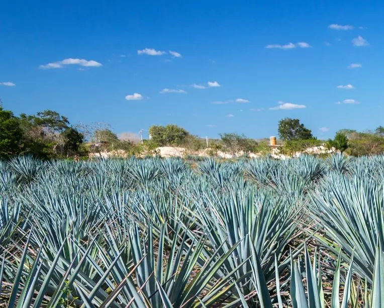
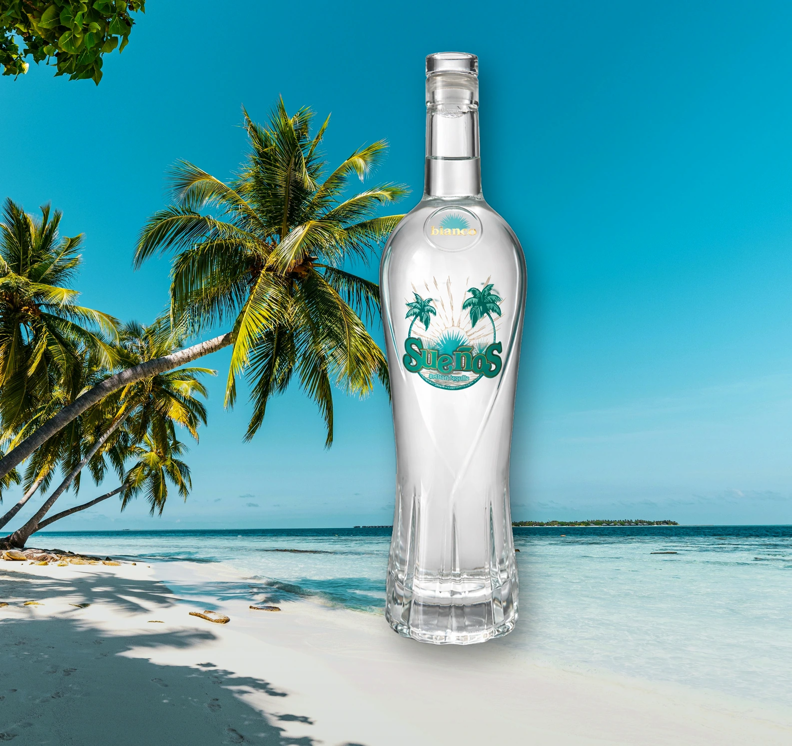
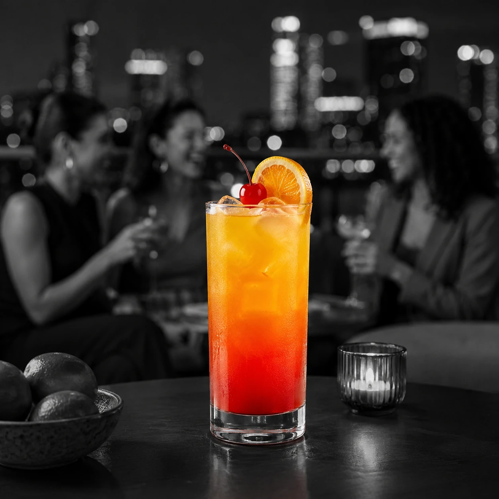
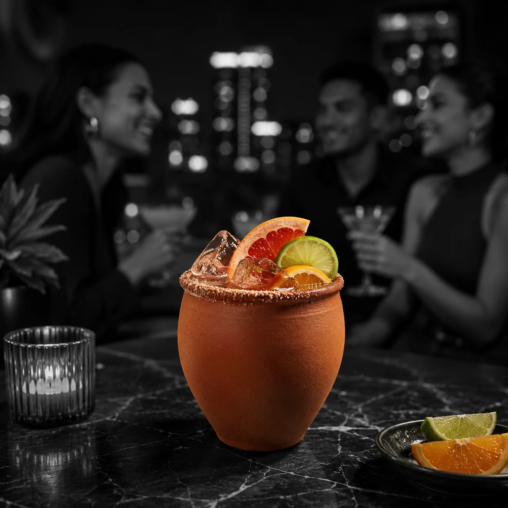

Sueños Blanco Tequila
A little vacation in a very tall bottle.
Bright agave, fresh citrus and a clean finish. Canadian-owned. Made in Jalisco from 100% Blue Weber agave.

Attention, Shoppers · 30 seconds
Gord got hold of the liquor store PA.

Founder
Owned
How Gord brought a little paradise home
Sueños began with Gord Erickson’s connection to Mexico and a simple idea: paradise should feel closer to home. A little of that feeling made its way into the bottle.
Read Our Story

Cocktails Made with Sueños
From a classic Margarita to the Don Terry, explore simple recipes that keep Sueños Blanco at the centre.
Sueños Margarita
Bright, classic and tequila-forward.
View Recipe →Paloma del Sueño
Fresh citrus, bubbles and patio energy.
View Recipe →Tequila Old Fashioned
Richer, slower and built for the night.
View Recipe →
Tequila Sunrise
A bright citrus classic with a sunset finish.
View Recipe →Ranch Water
Clean, crisp and made for hot afternoons.
View Recipe →Mexican Mule
Ginger, lime and a little copper-mug drama.
View Recipe →El Diablo
Dark fruit, ginger snap and a little bite.
View Recipe →
Cantarito
Big citrus energy in a clay cup.
View Recipe →
Matador
Pineapple-forward and quietly tropical.
View Recipe →
The Don Terry
Tequila, pineapple and soda.
View Recipe →Find Sueños Near You
Find a store to buy a bottle or switch to Find a pour for bars and restaurants. Confirm stock or menu availability with the venue before visiting.
The Sueños field guide
A field guide to tequila
A little know-how for the next bottle, from blanco and reposado to what 100% agave really means.